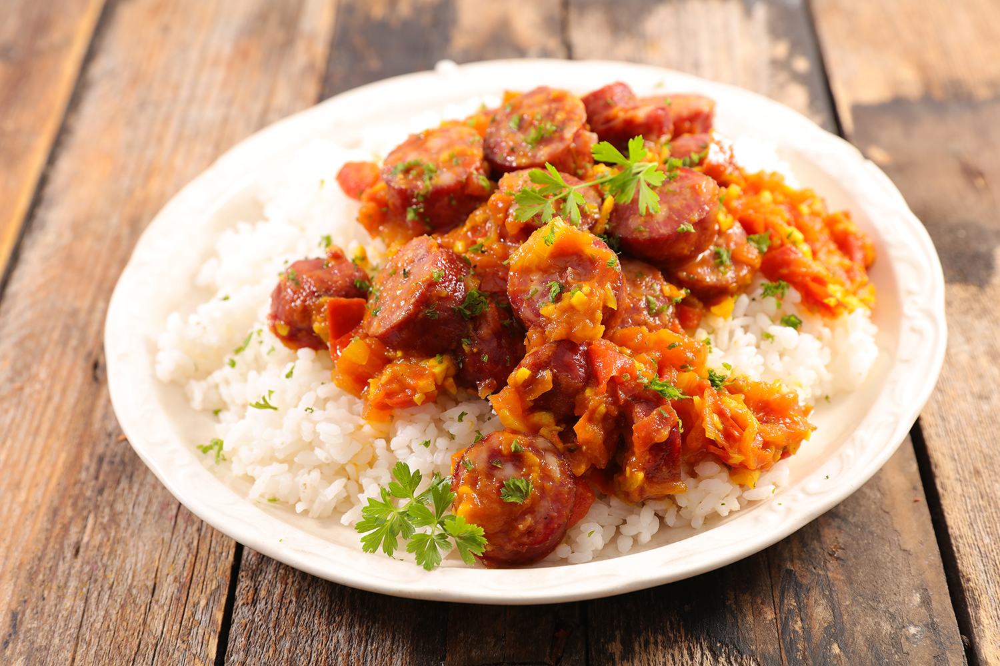

Rougail Saucisses de la Reunion

Description
Plat réunionnais par excellence, sa nature copieuse et sa composition équilibrée (viandes, légumes, féculents) faisaient autrefois le bonheur des ouvriers. Riz, grains, épices et viandes, un quatuor gagnant qui défie le temps pour arriver jusque dans nos assiettes. A la fois relevé et doux, riche et modeste, le rougail saucisses reste depuis une invitation au partage, en toute simplicité.
Ingredients
- 2 saucisses fraîches
- 2 saucisses fumées
- 4 petits piments
- 4 tomates
- 2 oignons
- Gingembre
- Sel
- Poivre
- Huile
Preparation
- Couper les tomates en petits morceaux,les oignonsm le gingembre
- Faire bouillir les saucisses pendant 10 mn
- Couper les saucisses
- Mettre les piments dans un pilon, ajouter du sel, piler, ajouter le gingembre, piler
- Faire chauffer de l’huile
- Faire revenir les morceaux de saucisses
- Ajouter les oignons, ajouter les épices
- Faire roussir
- Ajouter les tomates, bien mélanger
- Couvrir et laisser mijoter pendant 20 minutes
- SA FÉ PLÉZIR !
Home